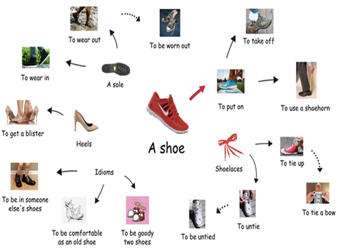
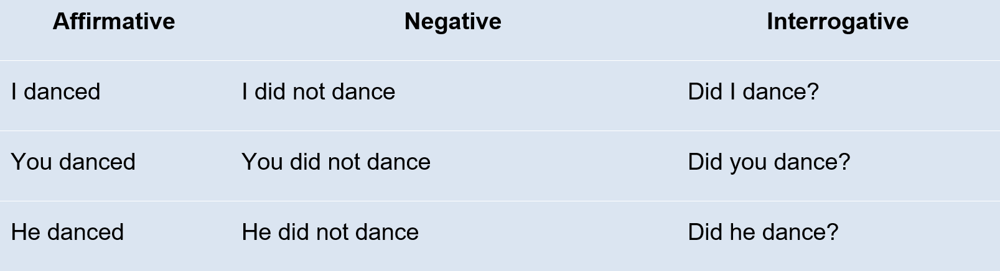
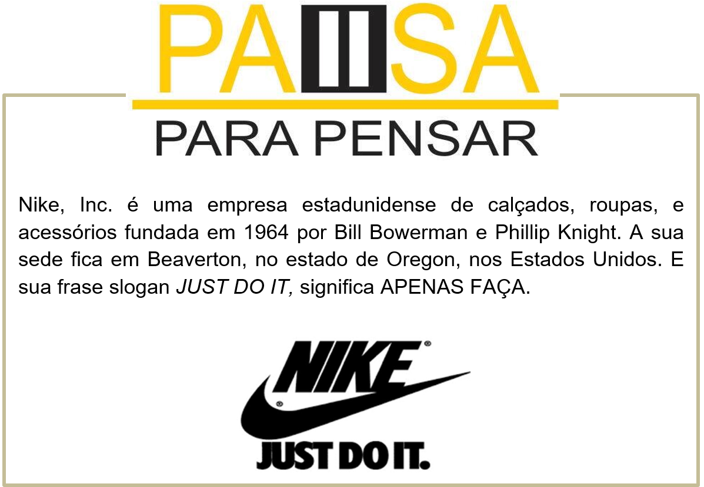
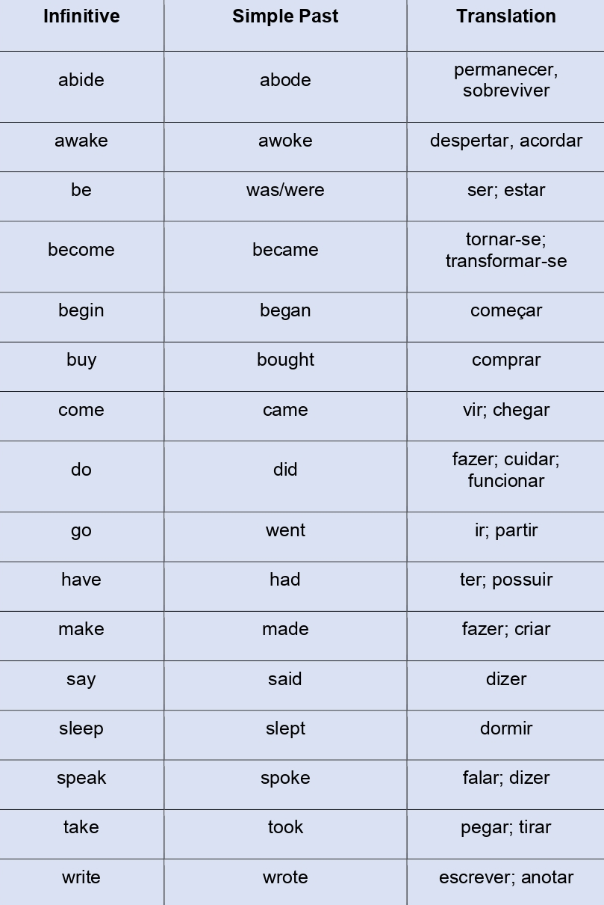
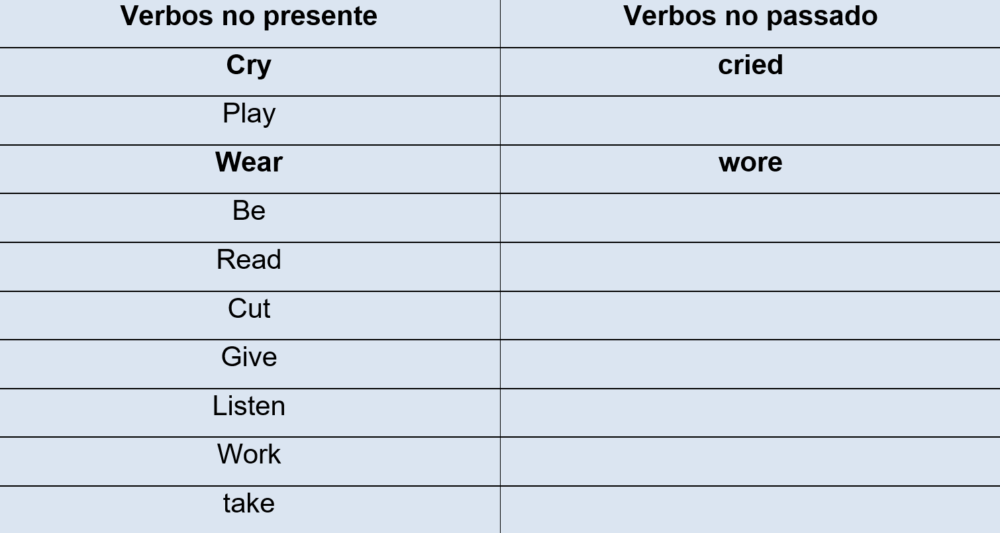

Footwear Sector – Setor Calçadista
Em inglês, existe o problema de aprendermos palavras genéricas demais e deixarmos de lado combinações e detalhes. Isso acontece com o tema que vamos aprender nessa unidade: SHOES (sapatos).
Algumas vezes falamos “Where are my shoes?” (onde estão meus sapatos?) ou, então, “I need shoes” (preciso de sapatos). A palavra “shoe” em si aparece sozinha, sem nenhuma combinação específica. Vamos conhecer alguns tipos de calçados.
Expressões que acompanham o footwear
Você sabia?
As numerações americanas dos sapatos são diferentes das brasileiras.
Observe a tabela:
Reconstruindo o conhecimento – Simple past
Leia o texto e observe os verbos destacados
The history of shoes
From archeological and paleoarcheological evidence, experts hypothesize that shoes were invented around in the Middle Paleolithic period approximately 40,000 years ago. However, it wasn't until the Upper Paleolithic period that footwear was consistently worn by populations.
Os verbos destacados estão no passado simples. Vamos ver as regras e uso desse tempo verbal.
Quando usar?
O Simple Past é usado para indicar ações passadas já concluídas, ou seja, para falar de fatos que já aconteceram; que começaram e terminaram no passado.
Formação do Simple Past
A formação básica do Simple Past é feita com o uso do auxiliar did nas formas negativa e interrogativa, e com o acréscimo de –ed, –ied ou –d ao final do verbo principal no infinitivo.
Observe as tabelas abaixo e confira exemplos de conjugação do Simple Past.
Exemplo: verbo to dance (dançar - regular)

Regular verbs (verbos regulares)
Para usar os verbos regulares em frases afirmativas no Simple Past, basta mudar a terminação do verbo de acordo com as seguintes regras:
1. Aos verbos regulares terminados em –e, acrescenta-se somente o –d no final do verbo:
to love (amar) – loved
to lie (mentir) – lied
2. Aos verbos regulares terminados em consoante+vogal+consoante (CVC), duplica-se a última consoante e acrescenta-se o –ed:
stop (parar) – stopped
control (controlar) – controlled
3. Aos verbos terminados em –y precedido de consoante, retira-se o y e acrescenta-se o –ied:
to study (estudar) – studied
to worry (preocupar-se) – worried
4. Aos verbos terminados em –y precedido de vogal, acrescenta-se somente o –ed:
enjoy (aproveitar) – enjoyed
stay (ficar) – stayed
Assista ao vídeo e aprenda mais sobre os verbos regulares e irregulares

Irregular verbs (verbos irregulares)
Os verbos irregulares não possuem um padrão de formação. Eles não seguem as regras indicadas acima pois possuem uma forma própria. Confira abaixo alguns verbos irregulares no passado simples:

O que aprendi
• Conjugar verbos no passado simples na forma regular;
• Usar a lista de verbos irregulares;
• Ampliamos os conhecimentos sobre o mercado calçadista;
• Aprendemos as diferenças de medidas entre países;
Praticando
Leia o trecho informativo sobre a produção de sapato e destaque os verbos no passado. Há verbos regulares e irregulares. Totalizam três verbos.
“In 2016, Bangladesh exported 48 million pairs of shoes. 42% of these were leather shoes. Millions of pairs are sold right in Bangladesh. The Bata Shoe Company is the second most important actor in the Bangladeshi footwear industry.”
Complete a tabela abaixo com os verbos conjugados no passado. Verifique se os verbos são regulares ou irregulares.
